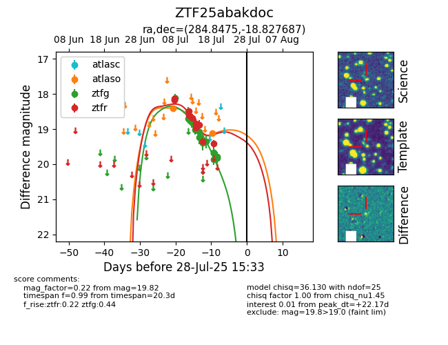

Target ZTF25abakdoc at 2025-07-28 15:33, see:
FINK: fink-portal.org/ZTF25abakdoc
Lasair: lasair-ztf.lsst.ac.uk/objects/ZTF25abakdoc
ALeRCE: alerce.online/object/ZTF25abakdoc
alt names
ZTF25abakdoc (ztf,fink)
coordinates:
equatorial (ra, dec) = (284.8475,-18.82769)
galactic (l, b) = (16.8755,-10.15887)
photometry
last atlaso=19.12, ztfg=19.82, ztfr=19.42
2 atlaso, 17 ztfg, 10 ztfr detections
